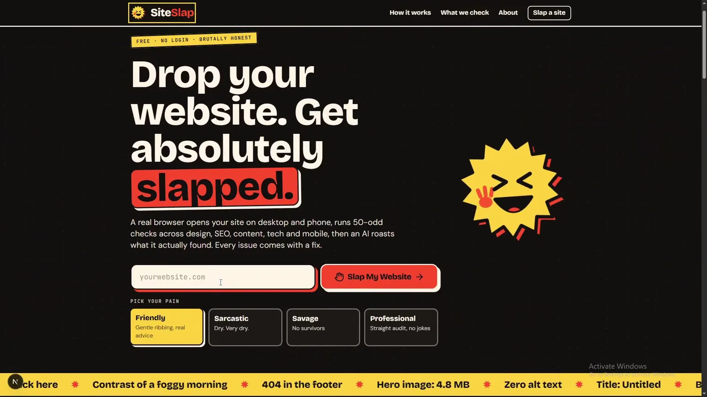
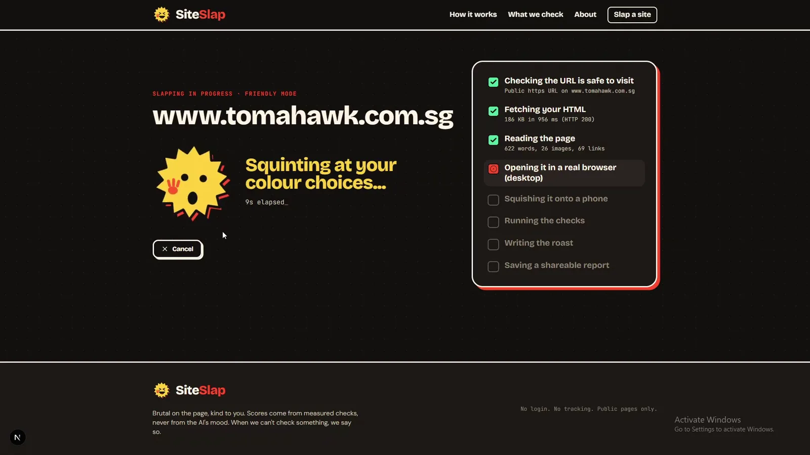
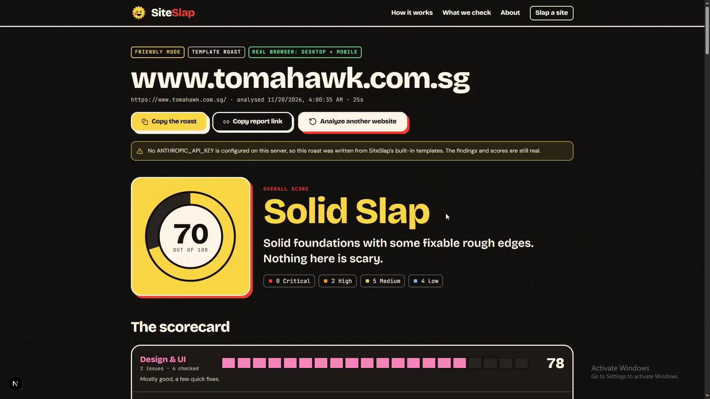
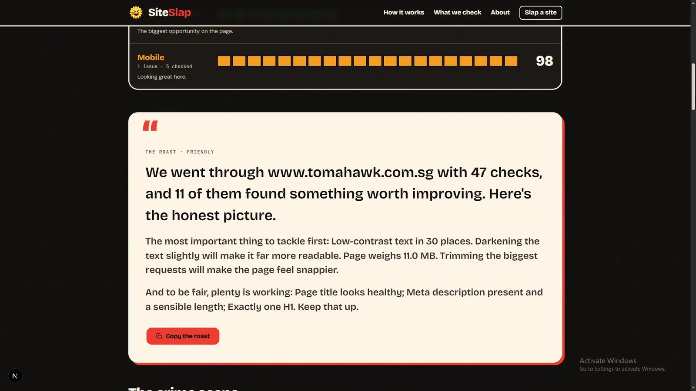
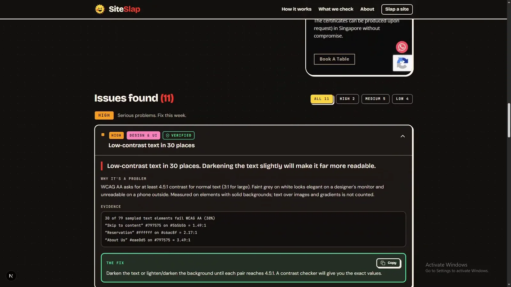

Case study / Side project / 2026
SiteSlap
Drop in a website address and SiteSlap opens it in a real browser, runs about fifty checks, scores it, and then roasts it. The jokes are the hook. The evidence and the fixes are the point.
The problem
Most site owners can't see what's wrong
Many websites lose people for the same reasons: poor design, slow loading, broken links and confusing navigation. Visitors get frustrated and leave, and the owner loses sales or enquiries without knowing why.
Most owners don't know these problems exist, or don't know how to find and fix them. The tools that do find them tend to produce long, dry lists that are easy to ignore.
The idea
An audit people actually want to read
SiteSlap is a web app that "roasts" websites. You enter a URL, it audits the site, and it writes honest, funny feedback about what's wrong and how to fix it. It checks things like:
- Slow page load times and heavy pages
- Non-responsive design and how the site behaves on a phone
- Accessibility problems, such as low contrast and unlabeled form fields
- Broken links and images
- Poor SEO
- Confusing navigation and UI
- Spelling and grammar mistakes
- Dated aesthetics
The roast sounds like this:
"Oof, your site loaded slower than dial-up in the 90s! Users are bouncing faster than a kid on a sugar high. Consider optimizing those chonky images, minifying that spaghetti code, and caching like your life depends on it."
"Your navigation is more tangled than wired earbuds shoved in a pocket. Simplify that menu before your users rage-quit in search of a less confounding corner of the internet."
Every joke comes with a practical tip, so the owner leaves knowing what to change.


The result
A report you can act on
The report starts with an overall score and a one-line verdict, then breaks the site down by category. Below that, every issue is listed by severity, and each one explains why it matters, shows the evidence found on the page, and gives a specific fix.
Overall score and scorecard
A score out of 100, counts of critical, high, medium and low issues, and a score for each category such as design, SEO and mobile.
The roast
A short written summary in the tone you picked, which leads with the most important thing to fix first and also says what the site does well.
Issues with evidence
Each issue shows what was measured, for example how many text elements fail the contrast standard and the exact colour pairs, followed by "the fix" with a copy button.
Share and repeat
Copy the roast, copy a link to the report, or analyze another website.



How it works
Measure first, joke second
The key design choice was to keep the facts and the jokes separate. The scores come from measured checks, not from the AI. The AI only writes the roast from those findings. When something can't be measured, the report says so by marking the issue as a potential problem instead of a verified one.
- Check the address is safe to visitOnly public web addresses are accepted.
- Fetch and read the pageThe HTML is downloaded and read for text, images and links.
- Open it in a real browserThe site is loaded on a desktop screen and then squeezed to a phone width, so layout, speed and mobile problems are measured on a rendered page.
- Run the checksDesign, SEO, content, technical quality and mobile checks produce scored findings with evidence.
- Write the roastThe findings go to the AI with the tone you picked. If no AI key is configured, the app falls back to built-in roast templates, and the findings and scores stay real.
- Save a shareable reportThe result gets its own link, so it can be sent to a client or a teammate.
Stack
What I used
| Part | Tools |
|---|---|
| Front end | React and Chakra UI |
| Back end | Node.js and Express |
| Performance and accessibility audits | Lighthouse and pa11y |
| Link checking | Cheerio |
| Roast writing | An AI language model, with built-in templates as a fallback |
Outcome
What happened when people used it
SiteSlap gives site owners an interactive way to find what is hurting their site's performance and user experience. A funny roast is easier to read, and to share, than a dry list of problems.
I tested it on my own projects and shared it with other developers. Many were surprised by real issues they had missed, and they liked that each one came with something specific to do about it.
It shows how AI can be used in a light-hearted but practical way. It is a side project that shows my skills in web development, AI integration and building an entertaining user experience.